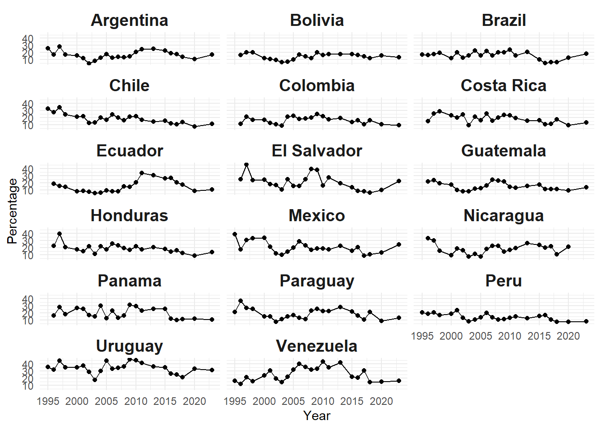
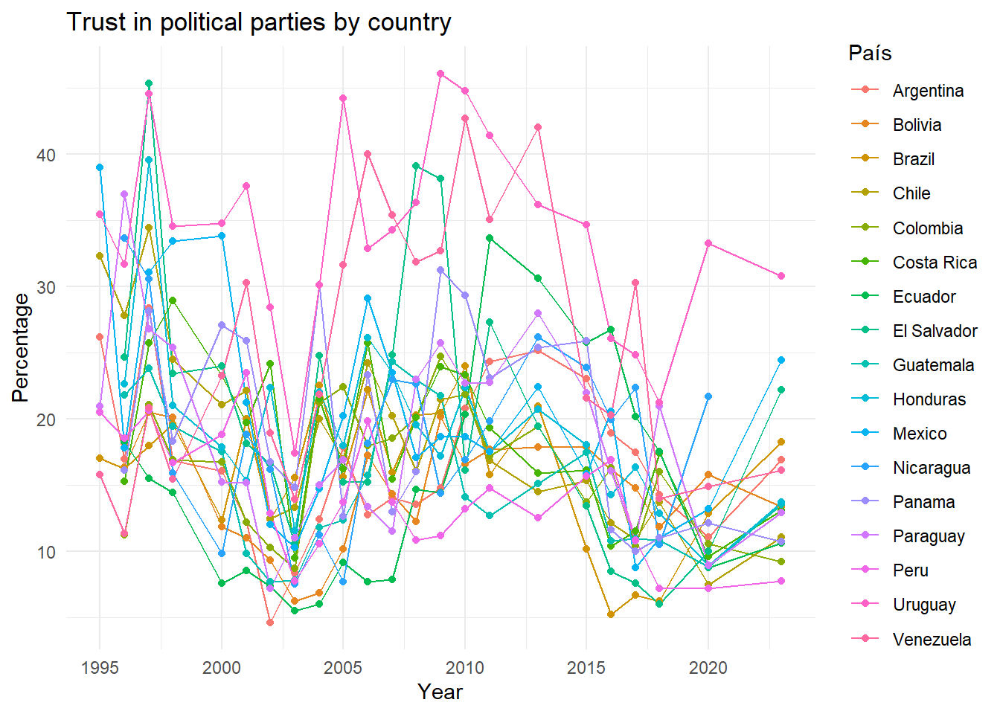

l1995 <- read_dta("input/data/latinobar/1995.dta", encoding = "UTF-8")
l1996 <- read_dta("input/data/latinobar/1996.dta", encoding = "UTF-8")
l1997 <- read_dta("input/data/latinobar/1997.dta", encoding = "UTF-8")
l1998 <- read_dta("input/data/latinobar/1998.dta", encoding = "UTF-8")
l2000 <- read_dta("input/data/latinobar/2000.dta", encoding = "UTF-8")
l2001 <- read_dta("input/data/latinobar/2001.dta", encoding = "UTF-8")
l2002 <- read_dta("input/data/latinobar/2002.dta", encoding = "UTF-8")
l2003 <- read_dta("input/data/latinobar/2003.dta", encoding = "UTF-8")
l2004 <- read_dta("input/data/latinobar/2004.dta", encoding = "UTF-8")
l2005 <- read_dta("input/data/latinobar/2005.dta", encoding = "UTF-8")
l2006 <- read_dta("input/data/latinobar/2006.dta", encoding = "UTF-8")
l2007 <- read_dta("input/data/latinobar/2007.dta", encoding = "UTF-8")
l2008 <- read_dta("input/data/latinobar/2008.dta", encoding = "UTF-8")
l2009 <- read_dta("input/data/latinobar/2009.dta", encoding = "UTF-8")
l2010 <- read_dta("input/data/latinobar/2010.dta", encoding = "UTF-8")
l2011 <- read_dta("input/data/latinobar/2011.dta")
l2013 <- read_dta("input/data/latinobar/2013.dta", encoding = "UTF-8")
l2015 <- read_dta("input/data/latinobar/2015.dta", encoding = "UTF-8")
l2016 <- read_dta("input/data/latinobar/2016.dta", encoding = "UTF-8")
l2017 <- read_dta("input/data/latinobar/2017.dta", encoding = "UTF-8")
l2018 <- read_dta("input/data/latinobar/2018.dta", encoding = "UTF-8")
l2020 <- read_dta("input/data/latinobar/2020.dta", encoding = "UTF-8")
l2023 <- read_dta("input/data/latinobar/2023.dta", encoding = "UTF-8")5 Proc y Análisis Data Latinobarómetro
5.1 Cargar datos
5.2 Procesar
5.2.1 Seleccionar variables
# 1995
l1995 = l1995 %>%
select(pais,
ano = numero,
id = enc,
exp = wt,
trust_ppol = p27j)# 1996
l1996 = l1996 %>%
select(pais,
ano = numero,
id = enc,
exp = wt,
trust_ppol = p33j)# 1997
l1997 = l1997 %>%
select(pais = idenpa,
ano = numinves,
id = numentre,
exp = wt,
trust_ppol = sp63g)# 1998
l1998 = l1998 %>%
select(pais = idenpa,
ano = numinves,
id = numentre,
exp = pondera,
trust_ppol = sp38g)# 2000
l2000 = l2000 %>%
select(pais = idenpa,
ano = numinves,
id = numentre,
exp = wt,
trust_ppol = P35ST_G)# 2001
l2001 = l2001 %>%
select(pais = idenpa,
ano = numinves,
id = numentre,
exp = wt,
trust_ppol = p61stg)# 2002
l2002 = l2002 %>%
select(pais = idenpa,
ano = numinves,
id = numentre,
exp = wt,
trust_ppol = p34stf)# 2003
l2003 = l2003 %>%
select(pais = idenpa,
ano = numinves,
id = numentre,
exp = wt,
trust_ppol = p21std)# 2004
l2004 = l2004 %>%
select(pais = idenpa,
ano = numinves,
id = numentre,
exp = wt,
trust_ppol = p34std)# 2005
l2005 = l2005 %>%
select(pais = idenpa,
ano = numinves,
id = numentre,
exp = wt,
trust_ppol = p47stb)# 2006
l2006 = l2006 %>%
select(pais = idenpa,
ano = numinves,
id = numentre,
exp = wt,
trust_ppol = p24st_c)# 2007
l2007 = l2007 %>%
select(pais = idenpa,
ano = numinves,
id = numentre,
exp = wt,
trust_ppol = p27st_e)# 2008
l2008 = l2008 %>%
select(pais = idenpa,
ano = numinves,
id = numentre,
exp = wt,
trust_ppol = p28st_c)# 2009
l2009 = l2009 %>%
select(pais = idenpa,
ano = numinves,
id = numentre,
exp = wt,
trust_ppol = p26st_c)# 2010
l2010 = l2010 %>%
select(pais = idenpa,
ano = numinves,
id = numentre,
exp = wt,
trust_ppol = P20ST_C)# 2011
l2011 = l2011 %>%
select(pais = idenpa,
ano = numinves,
id = numentre,
exp = wt,
trust_ppol = P22ST_C)# 2013
l2013 = l2013 %>%
select(pais = idenpa,
ano = numinves,
id = numentre,
exp = wt,
trust_ppol = P26TGB_G)l2015 = l2015 %>%
select(pais = idenpa,
ano = numinves,
id = numentre,
exp = wt,
trust_ppol = P19ST_C)# 2016
l2016 = l2016 %>%
select(pais = idenpa,
ano = numinves,
id = numentre,
exp = wt,
trust_ppol = P13STG)# 2017
l2017 = l2017 %>%
select(pais = idenpa,
ano = numinves,
id = numentre,
exp = wt,
trust_ppol = P14ST_G)# 2018
l2018 = l2018 %>%
select(pais = IDENPA,
ano = NUMINVES,
id = NUMENTRE,
exp = WT,
trust_ppol = P15STGBSC.G) # 2020
l2020 = l2020 %>%
select(pais = idenpa,
ano = numinves,
id = numentre,
exp = wt,
trust_ppol = p13st_g)# 2023
l2023 = l2023 %>%
select(pais = idenpa,
ano = numinves,
id = numentre,
exp = wt,
trust_ppol = P13ST_G)5.2.2 Unificar
data <- list(
l1995,
l1996,
l1997,
l1998,
l2000,
l2001,
l2002,
l2003,
l2004,
l2005,
l2006,
l2007,
l2008,
l2009,
l2010,
l2011,
l2013,
l2015,
l2016,
l2017,
l2018,
l2020,
l2023)
# Limpiar
data <- map(data, ~ .x %>%
mutate(across(everything(), ~ as.numeric(.))) %>%
mutate(across(everything(), ~ ifelse(. %in% c(-7, -6, -5, -4, -3, -2, -1), NA, .))))
# Unir
data <- bind_rows(data)
# Reordenar
data <- data %>%
dplyr::select(pais, ano, id, exp, trust_ppol)
# Limpiar entorno
rm(l1995,
l1996,
l1997,
l1998,
l2000,
l2001,
l2002,
l2003,
l2004,
l2005,
l2006,
l2007,
l2008,
l2009,
l2010,
l2011,
l2013,
l2015,
l2016,
l2017,
l2018,
l2020,
l2023)5.2.3 Recodificar
data <- data %>%
mutate(pais = car::recode(pais,
c("32 = 'Argentina';
68 = 'Bolivia';
76 = 'Brazil';
152 = 'Chile';
170 = 'Colombia';
188 = 'Costa Rica';
214 = 'Rep. Dominicana';
218 = 'Ecuador';
222 = 'El Salvador';
320 = 'Guatemala';
340 = 'Honduras';
484 = 'Mexico';
558 = 'Nicaragua';
591 = 'Panama';
600 = 'Paraguay';
604 = 'Peru';
724 = 'España';
858 = 'Uruguay';
862 = 'Venezuela'"), as.factor = T),
anio = car::recode(ano, c("16 = 2011;
17 = 2013;
18 = 2015;
23 = 2023")),
trust_ppol_rec = if_else(trust_ppol %in% c(1,2),1,0))5.3 Plot
# Crear diseño de encuesta con ponderador
design <- svydesign(ids = ~1, data = data, weights = ~exp)
# Calcular proporción de confianza (trust_ppol_rec == 1) por país y año
# Paso 1: calcular y guardar resultado de svyby()
resultado_bruto <- svyby(
~ I(trust_ppol_rec == 1),
~ pais + anio,
design,
svymean,
na.rm = TRUE
)
# Paso 2: ver los nombres generados
names(resultado_bruto)[1] "pais" "anio"
[3] "I(trust_ppol_rec == 1)FALSE" "I(trust_ppol_rec == 1)TRUE"
[5] "se.I(trust_ppol_rec == 1)FALSE" "se.I(trust_ppol_rec == 1)TRUE" porcentaje_confianza <- resultado_bruto %>%
as_tibble() %>%
transmute(
pais,
anio,
confianza = `I(trust_ppol_rec == 1)TRUE`,
se = `se.I(trust_ppol_rec == 1)TRUE`,
porcentaje = confianza * 100
) %>%
filter(!pais %in% c("España", "Rep. Dominicana")) # Filtrar países no deseadosggplot(porcentaje_confianza, aes(x = anio, y = porcentaje)) +
geom_line() +
geom_point() +
facet_wrap(~ pais) +
labs(title = "Trust in political parties by country",
x = "Year", y = "Percentage") +
theme_minimal()
ggplot(porcentaje_confianza, aes(x = anio, y = porcentaje)) +
geom_line() +
geom_point() +
facet_wrap(~ pais, ncol = 3) +
labs(x = "Year", y = "Percentage") +
theme_minimal() +
theme(strip.text = element_text(size = 14, face = "bold"))
ggsave("output/graph_trust_political_parties.png", width = 10, height = 12)ggplot(porcentaje_confianza, aes(x = anio, y = porcentaje, color = pais)) +
geom_line() +
geom_point() +
labs(title = "Trust in political parties by country",
x = "Year", y = "Percentage", color = "País") +
theme_minimal()